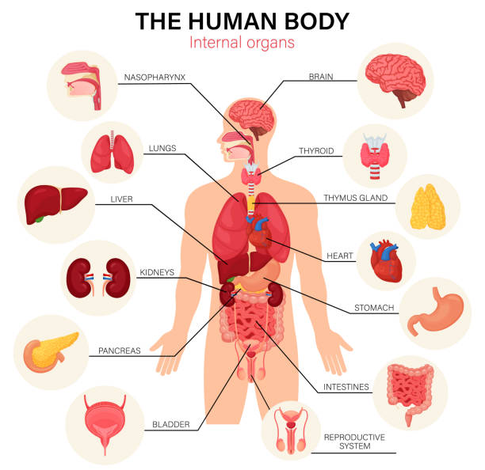

मानव शरीर और स्वच्छता पर 50 MCQ (भाग 4)
📚 **ANM परीक्षा की सर्वश्रेष्ठ तैयारी के लिए, इन किताबों को देखें:**
- ANM गाइड बुक (लेटेस्ट एडिशन) - अभी खरीदें!
- Vardhan's Comprehensive Guide for ANM Competitive Exam with Fully Solved PYQs for 2025 Exam (Hindi Edition)
- पिछले वर्षों के हल प्रश्न पत्र
नोट: सभी पुस्तकें Amazon द्वारा प्रदान की गई हैं।
यह ANM परीक्षा की तैयारी के लिए मानव शरीर और व्यक्तिगत स्वच्छता पर आधारित 50 महत्वपूर्ण बहुविकल्पीय प्रश्न (MCQ) का एक नया सेट है।
-
मानव शरीर में कितनी मांसपेशियाँ होती हैं?
- A. लगभग 206
- B. लगभग 300
- C. लगभग 600 से अधिक
- D. लगभग 1000
सही उत्तर: C. लगभग 600 से अधिक
-
रक्त का थक्का जमने में कौन-सा विटामिन सहायक होता है?
- A. विटामिन A
- B. विटामिन C
- C. विटामिन D
- D. विटामिन K
सही उत्तर: D. विटामिन K
-
मानव शरीर में सबसे बड़ी धमनी (Artery) कौन सी है?
- A. महाधमनी (Aorta)
- B. फुफ्फुसीय धमनी (Pulmonary Artery)
- C. मस्तिष्क धमनी
- D. गुर्दे की धमनी
सही उत्तर: A. महाधमनी (Aorta)
-
शरीर की सबसे बड़ी ग्रंथि (Gland) कौन सी है?
- A. थायरॉयड
- B. पिट्यूटरी
- C. यकृत (Liver)
- D. अग्न्याशय (Pancreas)
सही उत्तर: C. यकृत (Liver)
-
मानव शरीर में सबसे छोटी हड्डी कौन सी है?
- A. फीमर (Femur)
- B. टिबिया (Tibia)
- C. स्टेपीज (Stapes)
- D. ह्यूमरस (Humerus)
सही उत्तर: C. स्टेपीज (Stapes)
-
रक्त समूह की खोज किसने की थी?
- A. रॉबर्ट कोच
- B. कार्ल लैंडस्टीनर
- C. लुई पाश्चर
- D. एडवर्ड जेनर
सही उत्तर: B. कार्ल लैंडस्टीनर
-
स्वच्छता बनाए रखने के लिए दिन में कितनी बार हाथ धोने चाहिए?
- A. केवल एक बार
- B. हर बार भोजन के बाद
- C. जब भी आवश्यक हो, विशेषकर भोजन से पहले और शौचालय के बाद
- D. केवल सुबह
सही उत्तर: C. जब भी आवश्यक हो, विशेषकर भोजन से पहले और शौचालय के बाद
-
व्यक्तिगत स्वच्छता में क्या शामिल है?
- A. केवल दांतों को ब्रश करना
- B. नियमित स्नान, हाथ धोना, और साफ कपड़े पहनना
- C. केवल बाल धोना
- D. केवल चेहरे को धोना
सही उत्तर: B. नियमित स्नान, हाथ धोना, और साफ कपड़े पहनना
-
खराब स्वच्छता के कारण कौन-सा रोग फैल सकता है?
- A. मधुमेह
- B. हृदय रोग
- C. टाइफाइड और हैजा
- D. अस्थमा
सही उत्तर: C. टाइफाइड और हैजा
-
कौन-सा अंग रक्त को शुद्ध करता है?
- A. हृदय
- B. फेफड़े
- C. गुर्दे (Kidneys)
- D. लिवर
सही उत्तर: C. गुर्दे (Kidneys)
-
मानव शरीर में सबसे बड़ी हड्डी कौन सी है?
- A. फीमर (Femur)
- B. टिबिया (Tibia)
- C. पटेला (Patella)
- D. रेडियस (Radius)
सही उत्तर: A. फीमर (Femur)
-
शरीर में रक्त का मुख्य कार्य क्या है?
- A. केवल ऑक्सीजन का परिवहन
- B. पोषक तत्वों और ऑक्सीजन का परिवहन
- C. केवल अपशिष्ट पदार्थों को हटाना
- D. केवल शरीर का तापमान बनाए रखना
सही उत्तर: B. पोषक तत्वों और ऑक्सीजन का परिवहन
-
कौन-सा विटामिन शरीर में कैल्शियम के अवशोषण (absorption) में मदद करता है?
- A. विटामिन A
- B. विटामिन C
- C. विटामिन D
- D. विटामिन K
सही उत्तर: C. विटामिन D
-
पर्याप्त नींद क्यों आवश्यक है?
- A. केवल ऊर्जा के लिए
- B. शारीरिक और मानसिक स्वास्थ्य के लिए
- C. केवल मांसपेशियों के लिए
- D. उपरोक्त में से कोई नहीं
सही उत्तर: B. शारीरिक और मानसिक स्वास्थ्य के लिए
-
कौन-सी श्वसन नली फेफड़ों में हवा ले जाती है?
- A. अन्नप्रणाली (Esophagus)
- B. श्वासनली (Trachea)
- C. ग्रासनली (Pharynx)
- D. तंत्रिका (Nerve)
सही उत्तर: B. श्वासनली (Trachea)
-
शरीर में सबसे बड़ी अंतःस्रावी ग्रंथि (Endocrine Gland) कौन सी है?
- A. पिट्यूटरी ग्रंथि
- B. थाइमस
- C. थायरॉयड ग्रंथि
- D. एड्रिनल ग्रंथि
सही उत्तर: C. थायरॉयड ग्रंथि
-
आंतों में जल के अवशोषण के लिए कौन-सा अंग जिम्मेदार है?
- A. छोटी आंत
- B. बड़ी आंत
- C. पेट
- D. लिवर
सही उत्तर: B. बड़ी आंत
-
कौन-सा अंग रक्त में शर्करा (Blood Sugar) के स्तर को नियंत्रित करता है?
- A. गुर्दे
- B. अग्न्याशय (Pancreas)
- C. लिवर
- D. तिल्ली (Spleen)
सही उत्तर: B. अग्न्याशय (Pancreas)
-
निम्नलिखित में से कौन-सा रोग खराब स्वच्छता के कारण नहीं होता?
- A. हैजा
- B. मलेरिया
- C. टाइफाइड
- D. पीलिया
सही उत्तर: B. मलेरिया
-
व्यक्तिगत स्वच्छता के लिए, नाखूनों को कितनी बार काटना चाहिए?
- A. महीने में एक बार
- B. जब भी आवश्यक हो, नियमित रूप से
- C. साल में एक बार
- D. कभी नहीं
सही उत्तर: B. जब भी आवश्यक हो, नियमित रूप से
-
नाक, कान और गले को साफ रखने से कौन-सा रोग रोका जा सकता है?
- A. मधुमेह
- B. संक्रमण और श्वसन संबंधी रोग
- C. गठिया
- D. दिल का दौरा
सही उत्तर: B. संक्रमण और श्वसन संबंधी रोग
-
एक स्वस्थ शरीर के लिए दिन में कम से कम कितना पानी पीना चाहिए?
- A. 1-2 लीटर
- B. 3-4 लीटर
- C. 7-8 लीटर
- D. 10 लीटर से अधिक
सही उत्तर: B. 3-4 लीटर
-
श्वसन प्रणाली (Respiratory System) का मुख्य कार्य क्या है?
- A. भोजन पचाना
- B. रक्त पंप करना
- C. ऑक्सीजन लेना और कार्बन डाइऑक्साइड बाहर निकालना
- D. हार्मोन बनाना
सही उत्तर: C. ऑक्सीजन लेना और कार्बन डाइऑक्साइड बाहर निकालना
-
मानव शरीर में कुल कितनी हड्डियाँ होती हैं?
- A. 206
- B. 260
- C. 306
- D. 360
सही उत्तर: A. 206
-
मानव शरीर में सबसे बड़ा अंग कौन-सा है?
- A. हृदय
- B. लिवर
- C. त्वचा
- D. मस्तिष्क
सही उत्तर: C. त्वचा
-
स्वस्थ बालों के लिए क्या आवश्यक है?
- A. केवल तेल लगाना
- B. नियमित रूप से धोना और कंघी करना
- C. कभी नहीं धोना
- D. केवल शैम्पू का उपयोग करना
सही उत्तर: B. नियमित रूप से धोना और कंघी करना
-
दांतों को स्वस्थ रखने के लिए दिन में कितनी बार ब्रश करना चाहिए?
- A. केवल सुबह
- B. केवल रात में
- C. कम से कम दो बार (सुबह और रात)
- D. सप्ताह में एक बार
सही उत्तर: C. कम से कम दो बार (सुबह और रात)
-
सार्वजनिक शौचालय का उपयोग करने के बाद क्या करना चाहिए?
- A. कुछ भी नहीं
- B. हाथ धोना
- C. केवल मुंह धोना
- D. केवल साबुन से हाथ धोना
सही उत्तर: B. हाथ धोना
-
संक्रमण से बचने के लिए क्या सबसे अच्छा तरीका है?
- A. अस्वच्छ वातावरण में रहना
- B. नियमित रूप से हाथ धोना
- C. बीमार लोगों से दूरी बनाना
- D. B और C दोनों
सही उत्तर: D. B और C दोनों
-
निम्नलिखित में से कौन-सा एक संचारी रोग है जो खराब स्वच्छता से फैलता है?
- A. मधुमेह
- B. दिल का दौरा
- C. हैजा
- D. गठिया
सही उत्तर: C. हैजा
-
हड्डी और मांसपेशी प्रणाली का मुख्य कार्य क्या है?
- A. शरीर को ऊर्जा देना
- B. शरीर को सहारा और गति प्रदान करना
- C. रक्त पंप करना
- D. भोजन पचाना
सही उत्तर: B. शरीर को सहारा और गति प्रदान करना
-
मानव मस्तिष्क के कितने मुख्य भाग हैं?
- A. 1
- B. 2
- C. 3
- D. 4
सही उत्तर: C. 3 (प्रमस्तिष्क, अनुमस्तिष्क, मेडुला)
-
ऑक्सीजन युक्त रक्त कहाँ से हृदय में प्रवेश करता है?
- A. बायाँ अलिंद (Left Atrium)
- B. दायाँ अलिंद (Right Atrium)
- C. बायाँ निलय (Left Ventricle)
- D. दायाँ निलय (Right Ventricle)
सही उत्तर: A. बायाँ अलिंद (Left Atrium)
-
कौन-सा अंग पाचन तंत्र का हिस्सा नहीं है?
- A. पेट
- B. आंत
- C. फेफड़े
- D. लिवर
सही उत्तर: C. फेफड़े
-
मानव शरीर में लाल रक्त कोशिकाओं का जीवनकाल कितना होता है?
- A. 10 दिन
- B. 60 दिन
- C. 120 दिन
- D. 200 दिन
सही उत्तर: C. 120 दिन
-
स्वस्थ रहने के लिए कौन-सा अभ्यास सबसे महत्वपूर्ण है?
- A. केवल आहार
- B. केवल व्यायाम
- C. व्यक्तिगत स्वच्छता और नियमित व्यायाम दोनों
- D. केवल विश्राम
सही उत्तर: C. व्यक्तिगत स्वच्छता और नियमित व्यायाम दोनों
-
मानव शरीर में कितनी इंद्रियां (Senses) होती हैं?
- A. 3
- B. 4
- C. 5
- D. 6
सही उत्तर: C. 5
-
शरीर में सबसे बड़ी धमनी (Artery) कौन सी है?
- A. महाधमनी
- B. फुफ्फुसीय धमनी
- C. गुर्दे की धमनी
- D. मस्तिष्क की धमनी
सही उत्तर: A. महाधमनी
-
मानव शरीर में रक्त का थक्का जमने में कौन-सा विटामिन सहायक होता है?
- A. विटामिन A
- B. विटामिन C
- C. विटामिन D
- D. विटामिन K
सही उत्तर: D. विटामिन K
-
रक्त समूह 'O' वाले व्यक्ति को किस अन्य रक्त समूह का रक्त दिया जा सकता है?
- A. A और B
- B. केवल O
- C. AB
- D. सभी रक्त समूह
सही उत्तर: B. केवल O
-
मानव शरीर में सबसे बड़ा अंग कौन-सा है?
- A. हृदय
- B. लिवर
- C. त्वचा
- D. मस्तिष्क
सही उत्तर: C. त्वचा
-
किस ग्रंथि को 'मास्टर ग्रंथि' के रूप में जाना जाता है?
- A. थायरॉयड
- B. पिट्यूटरी
- C. एड्रिनल
- D. अग्न्याशय
सही उत्तर: B. पिट्यूटरी
-
मानव शरीर में रक्त का मुख्य कार्य क्या है?
- A. पोषक तत्वों और ऑक्सीजन का परिवहन
- B. भोजन पचाना
- C. शरीर के तापमान को नियंत्रित करना
- D. उपरोक्त सभी
सही उत्तर: D. उपरोक्त सभी
-
कौन-सा रोग खराब स्वच्छता के कारण नहीं होता?
- A. हैजा
- B. मलेरिया
- C. टाइफाइड
- D. पीलिया
सही उत्तर: B. मलेरिया
-
व्यक्तिगत स्वच्छता के लिए, नाखूनों को कितनी बार काटना चाहिए?
- A. महीने में एक बार
- B. जब भी आवश्यक हो, नियमित रूप से
- C. साल में एक बार
- D. कभी नहीं
सही उत्तर: B. जब भी आवश्यक हो, नियमित रूप से
-
नाक, कान और गले को साफ रखने से कौन-सा रोग रोका जा सकता है?
- A. मधुमेह
- B. संक्रमण और श्वसन संबंधी रोग
- C. गठिया
- D. दिल का दौरा
सही उत्तर: B. संक्रमण और श्वसन संबंधी रोग
-
एक स्वस्थ शरीर के लिए दिन में कम से कम कितना पानी पीना चाहिए?
- A. 1-2 लीटर
- B. 3-4 लीटर
- C. 7-8 लीटर
- D. 10 लीटर से अधिक
सही उत्तर: B. 3-4 लीटर
-
श्वसन प्रणाली (Respiratory System) का मुख्य कार्य क्या है?
- A. भोजन पचाना
- B. रक्त पंप करना
- C. ऑक्सीजन लेना और कार्बन डाइऑक्साइड बाहर निकालना
- D. हार्मोन बनाना
सही उत्तर: C. ऑक्सीजन लेना और कार्बन डाइऑक्साइड बाहर निकालना
-
मानव शरीर में कुल कितनी हड्डियाँ होती हैं?
- A. 206
- B. 260
- C. 306
- D. 360
सही उत्तर: A. 206
-
मानव शरीर में सबसे बड़ा अंग कौन-सा है?
- A. हृदय
- B. लिवर
- C. त्वचा
- D. मस्तिष्क
सही उत्तर: C. त्वचा
-
स्वस्थ बालों के लिए क्या आवश्यक है?
- A. केवल तेल लगाना
- B. नियमित रूप से धोना और कंघी करना
- C. कभी नहीं धोना
- D. केवल शैम्पू का उपयोग करना
सही उत्तर: B. नियमित रूप से धोना और कंघी करना
-
दांतों को स्वस्थ रखने के लिए दिन में कितनी बार ब्रश करना चाहिए?
- A. केवल सुबह
- B. केवल रात में
- C. कम से कम दो बार (सुबह और रात)
- D. सप्ताह में एक बार
सही उत्तर: C. कम से कम दो बार (सुबह और रात)
-
सार्वजनिक शौचालय का उपयोग करने के बाद क्या करना चाहिए?
- A. कुछ भी नहीं
- B. हाथ धोना
- C. केवल मुंह धोना
- D. केवल साबुन से हाथ धोना
सही उत्तर: B. हाथ धोना
-
संक्रमण से बचने के लिए क्या सबसे अच्छा तरीका है?
- A. अस्वच्छ वातावरण में रहना
- B. नियमित रूप से हाथ धोना
- C. बीमार लोगों से दूरी बनाना
- D. B और C दोनों
सही उत्तर: D. B और C दोनों